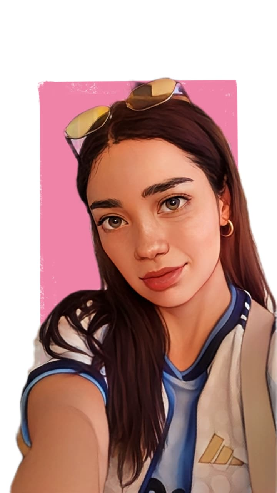

Maria del Mar Acosta
Ingeniera Industrial
Sobre mí
Ingeniera Industrial con experiencia en supervisión de equipos, análisis de datos y gestión de proyectos. Me apasiona la tecnología, la enseñanza y el aprendizaje continuo. 🚀